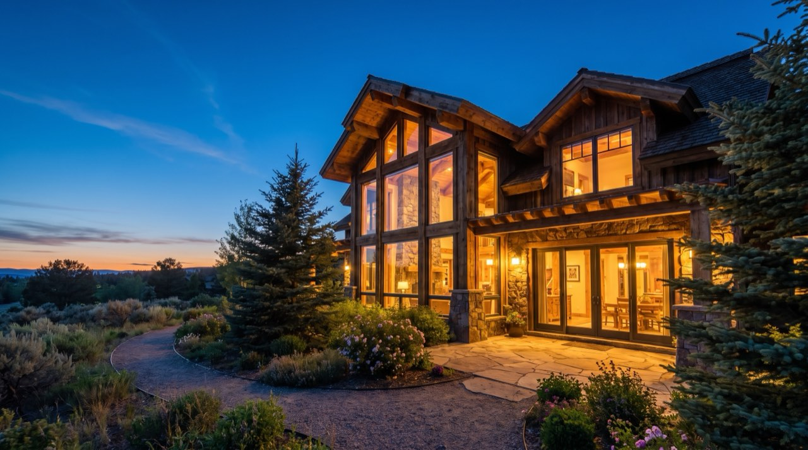
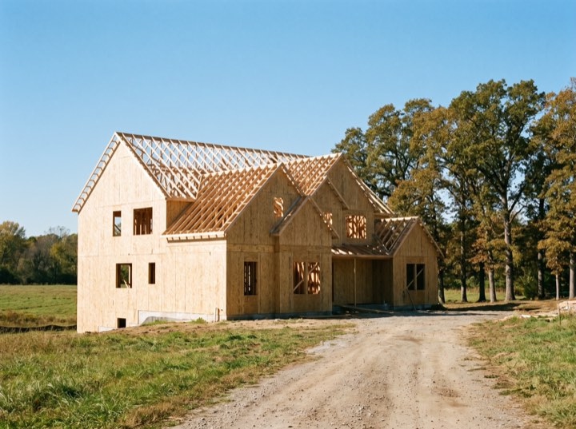
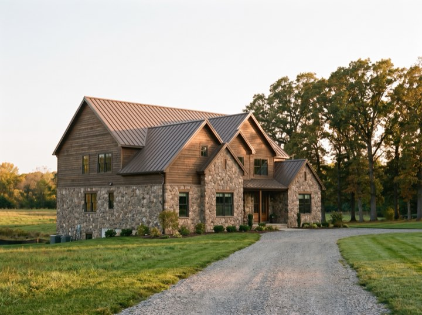
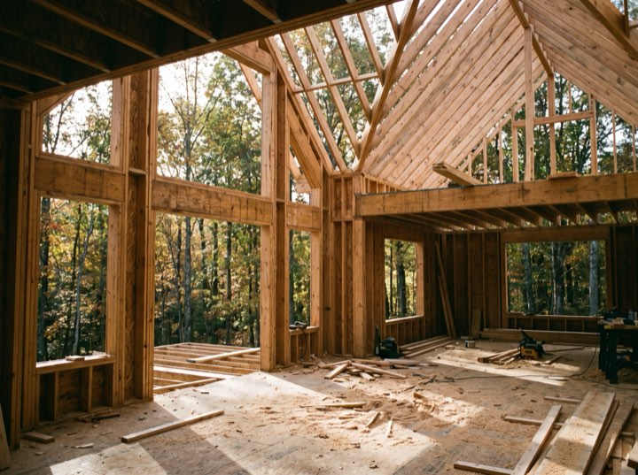
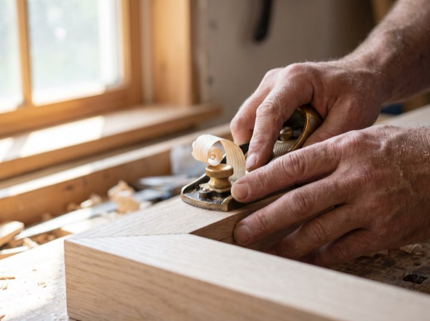
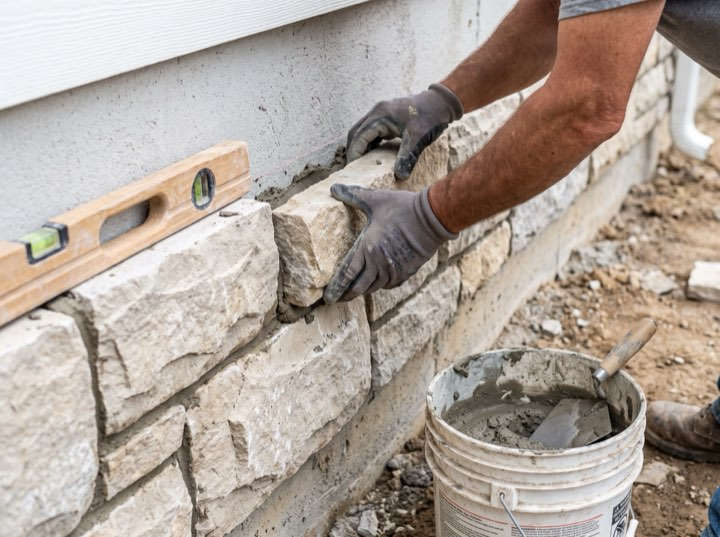

Custom homes from $1.2M
Custom homes and estate builds across the valley. We run four at a time and put everyone else on a list, because the alternative is a project manager spread across nine sites and present on none.

Services
Design-build if you want one contract, or as builder alongside your own architect. Both work; they run differently.
Architecture, interiors and construction under one roof and one contract. Fewer gaps to fall through, one person accountable.
You have an architect you love. We build it, hold the schedule and the budget, and stay out of the design conversation.
Site work, wells, septic and long driveways. The invisible half of a rural build, and the half that surprises people.
Older or architecturally notable properties, where the constraint is respecting what's there.
Now booking 2027. Architect enquiries welcome. Ask for our builder-of-record terms.
Arrange a conversationRecognised by
Process
For architects and homeowners both. Nobody should sign for a house without knowing this.
Before design, we look at the land. Access, soils, utilities and setbacks decide more about cost than the floor plan does.
Costing runs alongside design rather than after it, so you never fall in love with something unaffordable.
A fixed schedule with named milestones, and an allowance schedule that says plainly what is and isn't decided.
Site meeting every week, updated numbers every month, and a one-year warranty walkthrough after you've lived in it.
Four at a time
Two in framing, one in finish, one handed over. There is no fifth, which is why these look the way they do.





The most useful conversation happens before you buy the site. We'll walk a parcel with you and tell you what it will really cost to build on.
Now booking 2027. Architect enquiries welcome. Ask for our builder-of-record terms.